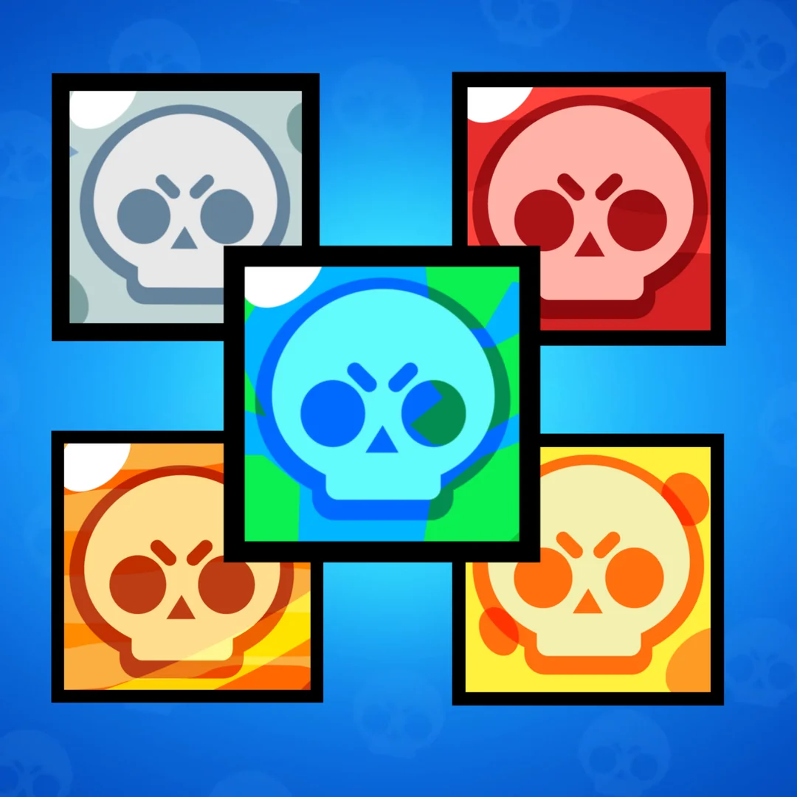

R A R I T A D E I B R A W L E R
I giocatori, che possono variare da due a dieci in base al tipo di evento, combattono in squadre o in singolo tramite avatar chiamati Brawler, che possono essere di 5 diverse rarità: raro, super-raro, epico, mitico e leggendario, e in passato era presente anche una 6ª rarità cioè cromatico successivamente rimossa. Ognuno di questi Brawler con una serie di caratteristiche e abilità uniche che li contraddistinguono, partendo dal livello 1 fino al livello 6 non hanno abilità specifiche, dal livello 7 i Gadget, dal livello 8 il primo equipaggiamento, le Abilità Stellari al livello 9, al livello 10 il secondo equipaggiamento e al livello 11 l'overdrive, un'abilità che si ricarica come la super ma più lentamente e che potenzia alcune statistiche di un brawler quali: velocità,salute e super. I brawler sono attualmente 78 (aprile 2024).
Inoltre, ogni primo giovedì di ogni mese inizia una nuova stagione del Brawl Pass, un pass battaglia che comprende numerose risorse e cosmetici sbloccabili raccogliendo XP, una valuta che è possibile ottenere giocando e completando missioni. Il pass ha due varianti (il brawl pass e il pass plus) che offrono molte più ricompense. Entrambe sono disponibili solo con acquisto in-app.Ad aprile 2024, le stagioni del Brawl Pass sono 25.
Sono disponibili diverse modalità di gioco, chiamate eventi, nella maggior parte delle quali i giocatori si presentano suddivisi in due squadre avversarie, ciascuna composta da tre giocatori. Due eccezioni sono la modalità "sopravvivenza", nella quale 10 giocatori devono lottare per sopravvivere, da soli (solo) o a coppie (in due) e la modalità "Duelli", dove due giocatori si sfidano con una squadra di 3 brawler preselezionati.
Da dicembre 2023, per un periodo di tempo limitato sono inoltre presenti le 5v5. Le modalità giocabili in 5 contro 5 sono Arraffagemme, Footbrawl, K.O. e Annientamento.

HOME